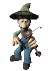

| Party Time |
 |
| After adventuring alone for a while, you realize that you need more and better gear. The good stuff is down deep or in a heavily zooed area. Why not bring some friends to help you out and make a party of it? |
| When you and others are joined in a party, you share XP and skill gain, no matter who makes the kill. You can not be invisible and within yelling distance of the party creator. Parties of 4 or more recieve a skill gain bonus. The larger the party, the larger the skill gain bonus. When a kill is made, each member of the party gets a share of the XP and skill gain. The highest level character in the party recieves a larger portion of the XP. If you stray too far from the party creator, only you will receive the XP and skill gain. |
| To Create a party: (Its my party and I'll die if I want to.) Choose a "name" for the party with between 3 and 14 letters in length. Then type party create name To Join a party: (I'm here! Let's crack some Giants' skulls!) type party join name To see who is in the party: (Can't tell? One too many Stan's?) type party list To leave a party: (Sorry dudes. I gotta go now.) type party leave Party Creator Powers: (You have the Power!) To Eject a party member: (Yer Outta There!) type party eject (crit name) To Break up a party: (thats it! Party's over! Everyone out!) type party break |
| Back to Bits of Info. |